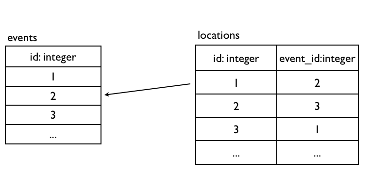
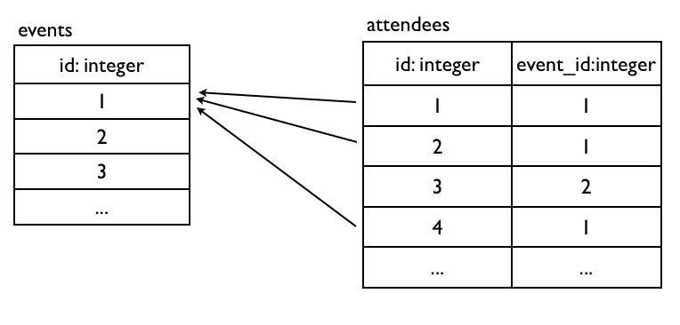
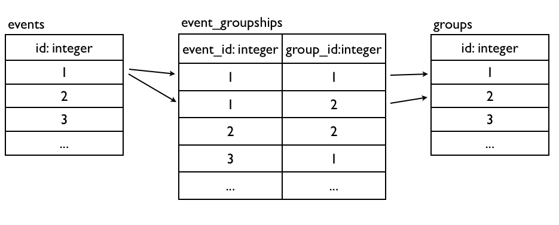
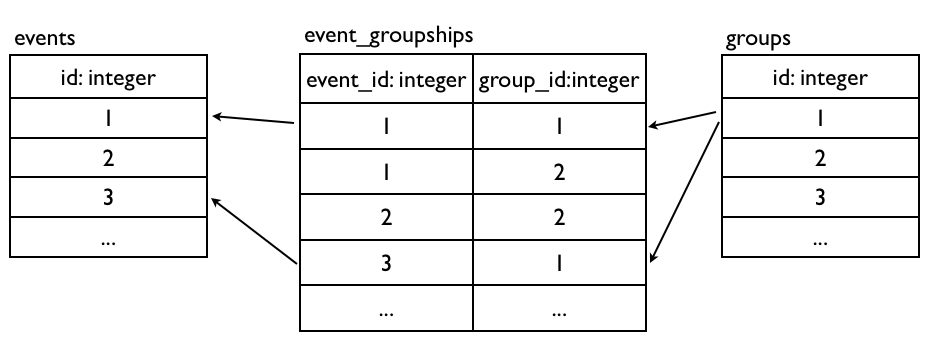

本書尚未完成，如果您有任何意見、鼓勵或勘誤，歡迎來信給我，謝謝。
ActiveRecord可以用Associations來定義資料表之間的關聯性，這是最被大家眼睛一亮ORM功能。到目前為止我們學會了用ActiveRecord來操作資料庫，但是還沒充分發揮關聯式資料庫的特性，那就是透過primary key和foreign keys將資料表互相關連起來。
Primary Key主鍵是一張資料表可以用來唯一識別的欄位，而Foreign Key外部鍵則是用來指向別張資料表的Primary Key，如此便可以產生資料表之間的關聯關係。了解如何設計正規化關聯式資料庫請參考附錄基礎。
Primary Key這個欄位在Rails中，照慣例叫做id，型別是整數且遞增。而Foreign Key欄位照慣例會叫做{model_name}_id，型別是整數。

延續Part1的Event Model範例，假設一個Event擁有一個Location。來新增一個Location Model，其中的event_id就是外部鍵欄位：
rails g model location name:string event_id:integer執行bundle exec rake db:migrate產生locations資料表。
分別編輯app/models/event.rb和app/models/location.rb：
class Event < ActiveRecord::Base
has_one :location # 單數
#...
end
class Location < ActiveRecord::Base
belongs_to :event # 單數
endbelongs_to和has_one這兩個方法，會分別動態新增一些方法到Location和Event Model上，讓我們進入rails console實際操作資料庫看看，透過Associations你會發現操作關聯的物件非常直覺：
e = Event.first
l = Location.new( :name => 'Hsinchu', :event => e )
# 等同於 l = Location.new( :name => 'Hsinchu', :event_id => e.id )
l.save
e.location
l.event
Event.first會撈出events table的第一筆資料，如果你第一筆還在，那就會是Event.find(1)。同理，Event.last會撈出最後一筆。
e = Event.first
l = e.build_location( :name => 'Hsinchu' )
l.save
e.location
l.evente = Event.first
l = e.create_location( :name => 'Hsinchu' )
e.location
l.event
一對多關聯算是最常用的，例如一個Event擁有很多Attendee，來新增Attendee Model：
rails g model attendee name:string event_id:integer執行bundle exec rake db:migrate產生attendees資料表。
分別編輯app/models/event.rb和app/models/attendee.rb：
class Event < ActiveRecord::Base
has_many :attendees # 複數
#...
end
class Attendee < ActiveRecord::Base
belongs_to :event # 單數
end同樣地，belongs_to和has_many這兩個方法，會分別動態新增一些方法到Attendee和Event Model上，讓我們進入rails console實際操作資料庫看看：
e = Event.first
a = Attendee.new( :name => 'ihower', :event => e )
# 或 a = Attendee.new( :name => 'ihower', :event_id => e.id )
a.save
e.attendees # 這是陣列
e.attendees.size
Attendee.first.evente = Event.first
a = e.attendees.build( :name => 'ihower' )
a.save
e.attendeese = Event.first
a = e.attendees.create( :name => 'ihower', :event => e )
e.attendeese = Event.first
a = Attendee.create( :name => 'ihower' )
e.attendees << a
e.attendeese = Event.first
e.id # 1
a = e.attendees.find(3)
attendees = e.attendees.where( :name => 'ihower' )這樣就可以寫出限定在某個Event下的條件查詢，用這種寫法可以避免一些安全性問題，不會讓沒有權限的使用者搜尋到別的Event的Attendee。
Event.attendees.destroy_all # 會一筆筆觸發Attendee的destroy回呼
Event.attendees.delete_all # 不會觸發Attendee的destroy回呼有個口訣可以記起來：有Foreign Key的Model，就是設定
belongs_to的Model。
學到這裡，還記得上一章建立的Category嗎? 它也要跟Event是一對多的關係，讓我們補上程式吧：
class Category < ActiveRecord::Base
has_many :events
end
class Event < ActiveRecord::Base
belongs_to :category
# ...
end

另一種常見的關聯模式則是多對多，一筆資料互相擁有多筆資料，例如一個Event有多個Group，一個Group有多個Event。多對多關聯的實作必須多一個額外關聯用的資料表(又做作Join table)，讓我們來建立Group Model和關聯用的EventGroupship Model，其中後者定義了兩個Foreign Keys：
rails g model group name:string
rails g model event_groupship event_id:integer group_id:integer執行bundle exec rake db:migrate產生這兩個資料表。
分別編輯app/models/event.rb、app/models/group.rb和app/models/event_groupship.rb：
class Event < ActiveRecord::Base
has_many :event_groupships
has_many :groups, :through => :event_groupships
end
class EventGroupship < ActiveRecord::Base
belongs_to :event
belongs_to :group
end
class Group < ActiveRecord::Base
has_many :event_groupships
has_many :events, :through => :event_groupships
end這個Join table筆者的命名習慣會是ship結尾，用以凸顯它的關聯性質。另外，除了定義Foreign Keys之外，你也可以自由定義一些額外的欄位，例如記錄是哪位使用者建立關聯。
blongs_to和has_many我們見過了，這裡多一種has_many :through方法，可以神奇地把Event和Group關聯起來，讓我們進入rails console實際操作資料庫看看：
g = Group.create( :name => 'ruby taiwan' )
e1 = Event.first
e2 = Event.create( :name => 'ruby tuesday' )
EventGroupship.create( :event => e1, :group => g )
EventGroupship.create( :event => e2, :group => g )
g.events
e1.groups
e2.groupsRails還有一種舊式的has_and_belongs_to_many方法也可以建立多對多關係，不過已經很少使用，在此略過不提。
以上的關聯方法blongs_to、has_one和has_many都還有一些可以客製的參數，讓我們來介紹幾個常用的參數，完整的參數請查詢API文件：
可以變更關聯的類別名稱，例如：
class Event < ActiveRecord::Base
belongs_to :manager, :class_name => "User" # 外部鍵是user_id
end可以變更Foreign Key的欄位名稱，例如改成manager_id：
class Event < ActiveRecord::Base
belongs_to :manager, :class_name => "User", :foreign_key => "manager_id"
endhas_many可以透過:order參數指定順序：
class Event < ActiveRecord::Base
has_many :attendees, :order => "id desc"
#...
end可以設定當物件刪除時，也會順便刪除它的has_many物件：
class Event < ActiveRecord::Base
has_many :attendees, :dependent => :destroy
end:dependent可以有三種不同的刪除方式，分別是：
:destroy 會執行attendee的destroy回呼:delete 不會執行attendee的destroy回呼:nullify 這是預設值，不會幫忙刪除attendee要不要執行attendee的刪除回呼效率相差不少，如果需要的話，必須一筆筆把attendee讀取出來變成attendee物件，然後呼叫它的destroy。如果用
:delete的話，只需要一個SQL語句就可以刪除全部attendee。
針對Model中的belongs_to和has_many關連，可以使用joins，也就是INNER JOIN
Event.joins(:category)
# SELECT "events".* FROM "events" INNER JOIN "categories" ON "categories"."id" = "events"."category_id"可以一次關連多個：
Event.joins(:category, :location)joins主要的用途是來搭配where的條件查詢：
Event.joins(:category).where("categories.name is NOT NULL")
# SELECT "events".* FROM "events" INNER JOIN "categories" ON "categories"."id" = "events"."category_id" WHERE (categories.name is NOT NULL)透過joins抓出來的event物件是沒有包括其關連物件的。如果需要其關連物件的資料，會使用includes。includes可以預先將關連物件的資料也讀取出來，避免N+1問題(見效能一章)
Event.includes(:category)
# SELECT * FROM events
# SELECT * FROM categories WHERE categories.id IN (1,2,3...)同理，也可以一次載入多個關連：
Event.includes(:category, :attendees)
# SELECT "events".* FROM "events"
# SELECT "categories".* FROM "categories" WHERE "categories"."id" IN (1,2,3...)
# SELECT "attendees".* FROM "attendees" WHERE "attendees"."event_id" IN (4, 5, 6, 7, 8...)includes方法也可以加上條件：
Event.includes(:category).where( :category => { :position => 1 } )